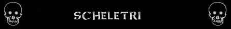

Resistenza Straordinaria alla Punta;
Abilità Speciali dei Non Morti;
Resistenza Straordinaria alla Punta;
Abilità Speciali dei Non Morti;

|
|
Tipologia | Scheletro Base (Umano) | Creatura Scheletrica |
| Climate/Terrain | Qualsiasi | Qualsiasi | |
| Frequency | Rare | Rare | |
| Organization | Nessuna | Nessuna | |
| Activity Cycle | Any | Any | |
| Diet | Nessuna | Nessuna | |
| Intelligence | Non (0) | Non (0) | |
| Treasure | Nessuno | Nessuno | |
| Alignment | Neutral | Neutral | |
| No. Appearing | 3d6+2 | Variabile | |
| Armor Class | 6 (o corazza se migliore) | Dipendente dai Dadi Vita | |
| Movement | 12 | Variabile, massimo 12 | |
| Hit Dice | 1 | Variabili | |
| Thac0 | 20 | 21 - 1 a Dado Vita | |
| No. of Attacks | 1 attacco fisico o 1 arma | Variabile | |
| Damage / Attacks | 1d6 (taglio) o Variabile | Variabile | |
| Special Attacks | Nessuno | Nessuno | |
| Special Defenses | Resistenza
Superiore al Taglio; Resistenza Straordinaria alla Punta; Abilità Speciali dei Non Morti; |
Resistenza
Superiore al Taglio; Resistenza Straordinaria alla Punta; Abilità Speciali dei Non Morti; |
|
| Special Weakness | Vulnerabilità dei Non Morti; | Vulnerabilità dei Non Morti; | |
| Magic Resistance | None | None | |
| Senses | Sensi dei Non Morti | Sensi dei Non Morti | |
| Size | Medium (1,8 m. altezza) | Variabile | |
| Morale | Fearless (20) | Fearless (20) | |
| XP value | 82 (con AC 6 e fino a 10 danni) | Variabile |
SCHELETRO BASE
Descrizione
Animati dalla magia oscura e composti interamente di ossa gli scheletri sono una delle forme base della non vita.
Combat
Uno scheletro continua ad attaccare fino a che non viene distrutto.
RESISTENZA SUPERIORE AL TAGLIO (Typical Ability): Il corpo della creatura è particolarmente resistente ai danni da taglio, per tale motivo la stessa subirà solo la metà (per difetto) di tutti i danni da taglio provocati nei suoi confronti.
RESISTENZA STRAORDINARIA ALLA PUNTA (Typical Ability): Il corpo della creatura è incredibilmente resistente ai danni da punta, per tale motivo la stessa subirà solo il 25% (per difetto) di tutti i danni da punta provocati nei suoi confronti.
MODERATE COMBO - RESISTENZA SUPERIORE AL TAGLIO e RESISTENZA STRAORDINARIA ALLA PUNTA - Le due abilità costituiscono una combo in quanto difendono la creatura da due dei tre possibili danni fisici. In considerazione della circostanza che entrambe le difese sono pari o superiori al 50% questa combo può essere considerata moderata.
POTERI E VULNERABILITA' DEI NON MORTI : In quanto creature non morte gli scheletri ottengono le seguenti caratteristiche dei non morti (link):
Habitat/Society
Gli scheletri sono ossa animate di un morto, esseri non morti privi di intelletto al servizio dei loro padroni. Gli scheletri agiscono solo in base agli ordini ricevuti. Non sono in grado di trarre conclusioni da soli e non prendono nessuna iniziativa. A causa di questa limitazione, le istruzioni che ricevono devono sempre essere semplici. Si tenga presente che, come tutti i non-morti, gli scheletri sono spinti da una permanente intolleranza all'energia positiva. Siccome gli esseri viventi sono catalizzatori di questa energia (le forme animali in particolare) tutti i non morti hanno una naturale tendenza a eliminare la vita in queste creature (alla morte l'energia positiva si dissolve). Per questo motivo gli scheletri, in quanto non morti senza intelligenza sono comunque molto aggressivi nei confronti degli esseri viventi che incontrano.
Ecology
Essendo creature non morte gli scheletri non hanno alcun rapporto con l'ecologia del primo piano materiale, non si devono mai riposare e non hanno bisogno di nutrirsi o dissetarsi, costituendo invece un morbo per tale ecologia. Uno scheletro raramente indossa più dei resti marcescenti degli abiti o dell'armatura che portava al momento della morte.
CREATURA SCHELETRICA
Procedimento di Creazione
Gli scheletri comuni rappresentano una forma di non morto base. Infatti, lo scheletro di qualsiasi creatura può potenzialmente essere animato per dare vita ad una creatura scheletrica. Si noti che si otterrà una scheletro animando i resti di una creatura composti per la maggior parte di ossa, laddove, invece, vi sia ancora certo ammontare di carne residua, animando il cadavere di darà luogo ad una creatura zombie.
Per determinare le caratteristiche della creatura scheletrica animata si dovranno seguire le regole di seguito indicate.
TIPO E TAGLIA: Il tipo della creatura cambia in non morto. La creatura scheletrica mantiene la taglia ed i corrispondenti benefici posseduti della creatura originaria.
INTELLIGENZA ED ALLINEAMENTO: La creatura scheletrica ha sempre intelligenza pari a Non (0) ed allineamento Neutral.
DADI VITA/LIVELLI: La creatura scheletrica ottiene i medesimi dadi vita della creatura originaria ma perde ogni eventuale bonus di costituzione posseduto dalla stessa. Ad esempio, uno scheletro di Ettin (9+9 Dadi Vita) una volta animato risulterà avere 9 Dadi Vita. La creatura scheletrica, inoltre, perderà ogni livello di classe posseduto dalla creatura originaria. Per tale motivo, animando lo scheletro di un umano, guerriero di 7° livello, si otterrà uno scheletro base da 1 Dado Vita come del resto animando un qualsiasi altro scheletro umano.
FATTORE MOVIMENTO: La creatura scheletrica manterrà il fattore movimento posseduto dalla creatura originaria con il limite di non poter in alcun caso ottenere un fattore movimento superiore a 12. La creatura scheletrica, inoltre, perderà ogni modalità di movimento diversa dal camminare.
CLASSE ARMATURA: Lo spessore delle ossa della creatura scheletrica darà luogo alla propria classe armatura base. Per tale motivo la classe armatura della creatura scheletrica dipenderà dalla taglia della stessa come indicato nella seguente tabella. Si noti che qualora la creatura scheletrica indossi una corazza la stessa riceverà la classe armatura migliore tra la propria base e quella concessa dalla corazza indossata.
| TAGLIA | CLASSE ARMATURA |
| Tiny | 8 |
| Small | 7 |
| Medium | 6 |
| Large | 5 |
| Huge | 3 |
| Gargantuan | 1 |
ATTACCHI: Le creature scheletriche sono dotate degli stessi attacchi fisici posseduti dalla creatura originaria. In alternativa, quando non posseggono originariamente una forma di attacco fisico (si pensi allo scheletro di un umano), tutte le creature scheletriche potranno utilizzare un attacco fisico che può considerarsi un attacco da lacerazione in grado di produrre un ammontare di danno dipendente dalla taglia della creatura come indicato nella seguente tabella. Si noti che gli scheletri di umani, semi-umani ed umanoidi possono utilizzare una qualsiasi arma da corpo a corpo considerandosi sempre abili nell'uso della stessa (anche se non conoscevano come utilizzarla in vita).
| TAGLIA | DANNI |
| Tiny | 1d3 |
| Small | 1d4 |
| Medium | 1d6 |
| Large | 1d8 |
| Huge | 1d10 |
| Gargantuan | 1d12 |
ABILITA' SPECIALI: Le creature scheletriche perdono tutte le abilità speciali possedute dalla creatura originaria. Le creature scheletriche perdono, altresì, tutte le conoscenze relative alle competenze non relative alle armi, alle competenze relative alle armi ed al lancio degli incantesimi possedute dalla creatura originaria. Le creature scheletriche ottengono, però, le seguenti abilità speciali particolari nonché tutte le abilità e vulnerabilità proprie dei non morti corporei.
RESISTENZA SUPERIORE AL TAGLIO (Typical Ability): Il corpo della creatura è particolarmente resistente ai danni da taglio, per tale motivo la stessa subirà solo la metà (per difetto) di tutti i danni da taglio provocati nei suoi confronti.
RESISTENZA STRAORDINARIA ALLA PUNTA (Typical Ability): Il corpo della creatura è incredibilmente resistente ai danni da punta, per tale motivo la stessa subirà solo il 25% (per difetto) di tutti i danni da punta provocati nei suoi confronti.
MODERATE COMBO - RESISTENZA SUPERIORE AL TAGLIO e RESISTENZA STRAORDINARIA ALLA PUNTA - Le due abilità costituiscono una combo in quanto difendono la creatura da due dei tre possibili danni fisici. In considerazione della circostanza che entrambe le difese sono pari o superiori al 50% questa combo può essere considerata moderata.
Insensibilità al dolore e al piacere fisico : I non-morti non provano più dolore e piacere fisico, per questo motivo non subiscono tutti gli effetti che il dolore provoca alle creature (ad es. sono immuni agli effetti di molti incantesimi che causano dolore alla vittima) inoltre, se si tratta di non-morti utenti di magia non perdono la concentrazione quando sono feriti durante il lancio dell'incantesimo (a meno che la botta non sia così forte da impedire loro l'esecuzione della componente somatica, come nell'ipotesi di un colpo critico).
Assenza di metabolismo : I non-morti non hanno più un metabolismo vitale per cui non crescono e non invecchiano, inoltre non hanno bisogno di nutrirsi in via convenzionale con acqua e cibo (esistono però alcuni tipi di non-morti che hanno la necessità di nutrirsi ad es. di cadaveri...). Sono anche immuni all'invecchiamento magico come quello provocato dal tocco di un fantasma.
Non necessaria respirazione : Essendo il corpo dei non-morti non più vitale costoro non hanno la necessità di respirare, la loro voce quando presente è creata dalla modulazione delle onde sonore operata direttamente dall'energia negativa che permea il loro corpo. Si noti che i non morti corporei emettono voci e suoni utilizzando, tramite l'energia negativa, le loro bocche, quindi per poter parlare necessitano della testa. Per questo motivo i non-morti utenti di magia sono in grado di lanciare magie anche in assenza di aria (ad es. sotto l'acqua anche se in questo caso continuano eventualmente ad avere i problemi relativi ai componenti somatici).
Mancanza di affaticamento e rigenerazione : Le creature non-morte non si affaticano, per questo motivo non hanno bisogno di riposare e di dormire. Inoltre non subiscono gli effetti della fatica in combattimento e quelli dovuti all'uso delle magie (ad es. Ray of Fatigue). Al tempo stesso i non-morti non possono riposare (del resto non ne hanno bisogno) ma si considerano sempre in una condizione di non affaticamento, per quanto riguarda il recupero del punti ferita si considera come se fossero sempre in stato di riposo indipendentemente dalle loro attività (si noti che gli è però interdetto il riposo totale), quanto invece ai punti magia costoro recupereranno 2 punti magia all'ora indipendentemente dalle loro attività. Inoltre, tutti i non morti corporei (anche non dotati di rigenerazione) qualora subiscano la mutilazione di un pezzo del corpo possono (se hanno il pezzo tagliato a disposizione) ricollegarlo al loro corpo avvicinandolo e tendendolo attaccato alla zona in cui si dovrebbe trovare per un intero turno (tramite l'energia negativa che ristabilisce il collegamento con la parte tagliata) al termine del quale otterrà la funzionalità dello stesso. Si noti che non morti senza intelligenza (int. 0) non procederanno da soli a questa operazione.
Lentezza nell'apprendimento : Le creature non morte che siano intelligenti e si dedichino allo studio non apprendono alla stessa velocità di un essere vivente. Infatti l'energia negativa se da un lato blocca il loro metabolismo impedendogli di invecchiare nega gli effetti dinamici tipici dell'energia positiva. In termini di gioco quello che un essere vivente può imparare in 8 ore di lavoro (o studio) sarà recepito dal non morto in 24 ore interamente dedicate (del resto non necessitano di riposo per cui possono dedicare interi giorni consecutivi allo studio).
Resistenza alle intemperie ed alle malattie : I non-morti sono insensibili alle variazioni climatiche e al cambiamento della temperatura, possono ad es. camminare senza vesti in una tormenta di neve senza subire alcuna conseguenza. Inoltre non subiscono gli effetti di alcuna malattia colpisca gli esseri viventi anche qualora sia di fonte magica.
Immunità ai colpi critici : Non avendo parti in senso stretto vitali i non-morti non subiscono i normali effetti dei colpi critici né quelli affini di alcune arti di combattimento. I non morti incorporei, infatti, saranno completamente immuni a tutti gli effetti critici. I non morti dotati di un corpo fisico, invece, utilizzeranno una particolare tabella di colpi critici.
Assenza di stato comatoso : I non-morti, una volta raggiunti 0 punti ferita muoiono istantaneamente (a meno che non sia prevista per loro una regola speciale come per i vampiri) senza che possa applicarsi a costoro la regola del coma da 0 a -9 punti ferita.
Impossibilità di procreazione : I non-morti non sono in grado di procreare nuove creature viventi anche qualora i loro organi riproduttivi sono in grado di funzionare (ad es. nei vampiri). Occorre rammentare che alcuni non-morti però sono in grado di creare nuovi undead spesso uccidendo le creature viventi.
Perdita delle caratteristiche viventi : I non-morti perdono le caratteristiche fisiche e magiche che avevano come creature viventi (ad es. le ghiandole velenifere di una vipera zombie non produrranno più veleno, i ragni non produrranno più ragnatele, i folletti zombies non saranno più in grado di divenire invisibili).
Inversione energetica : A differenza delle creature viventi i non-morti subiscono danni dall'esposizione diretta a fonti di energia positiva e sono rinvigoriti da quella negativa.
Intolleranza all'energia positiva : Tutti i non-morti sono intolleranti nei confronti dell'energia positiva, siccome gli esseri viventi sono catalizzatori di questa energia (le forme animali in particolare) tutti i non-morti hanno una naturale tendenza a eliminare la vita in queste creature (alla morte l'energia positiva si dissolve). Per questo motivo gli undead senza intelligenza sono cmq. molto aggressivi nei confronti degli esseri viventi, quelli intelligenti sebbene subiscano il fastidio dalla vicinanza degli esseri viventi possono dominare tale impulso.
Immunità al risucchio di energia vitale : Tutti i non-morti sono immuni al risucchio di energia vitale (energy drain) come ad esempio quello provocato dal tocco di uno spettro, sia che questo risucchio provochi perdita di livelli che di altre caratteristiche o punti ferita.
Sensi della non vita : I non morti comunemente perdono i loro sensi che avevo in vita che sono sostituiti dai sensi dell'energia negativa. I sensi dell'energia negativa sono solo due : Vista, un non morto vede sempre come un umano medio di giorno indipendentemente dalla luce presente, la sua vista però è in bianco e nero e non riesce a distinguere i colori, il campo visivo e il punto di partenza della vista sono quelli che aveva in vita (uno scheletro di un uomo senza teschio ha il campo visivo di un uomo e la vista parte dal punto in cui si sarebbe trovata la sua testa). Udito, l'udito di un non morto è equiparabile a quello di un umano medio e il suo punto di partenza è quello che aveva in vita. Comunemente quindi i non morti perdono gli altri sensi, non sono in grado di sentire sapori, odori e di distinguere al tatto corpi caldi e freddi.
Immunità mentali : Non sono influenzati dalle magie mentali non studiate appositamente per loro (ad es. sono immuni a charm, hold person, ecc...) e non sono soggetti alle illusioni che non siano studiate specificamente per illudere i flussi di energia negativa come Invisibility to Undead.
Immunità ai veleni e alla paralisi : I non-morti sono immuni a tutti gli effetti dei veleni e alle forme di paralisi che incidono sui tessuti biologici delle creature viventi.
Resistenza al freddo : I non morti non soffrono il freddo. Per tale motivo, i non morti incorporei sono totalmente immuni ai danni da freddo, sia di origine magica che naturale; i non morti corporei, invece, possono essere danneggiati dal freddo particolarmente intenso. Costoro assorbono i primi 3 danni da freddo subiti per poi ridurre la restante parte dei danno da freddo subendone solo la metà (per difetto).
Sensibilità al sacro : I non morti sono sensibili agli oggetti sacri e ai riti delle divinità della Fratellanza della Luce che utilizzano potere infuso di energia negativa, per questo motivo molti chierici di queste divinità sono in grado di scacciarli, inoltre il contatto con il contenuto di una boccetta di acqua santa della Fratellanza della Luce provoca a costoro 2d4 danni ustionando i loro tessuti non viventi.